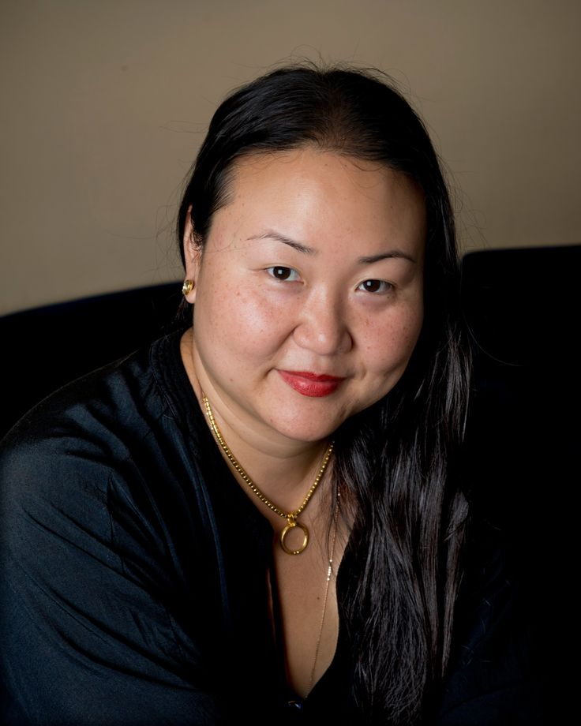

Hanya Yanagihara was born in 1974 in Los Angeles.Her father Ronald Yanagihara was from Hawaii, and worked as a hematologist and oncologist.[2] Her mother was born in Seoul.Yanagihara is of Japanese descent through her father and of Korean descent through her mother. As a child, Yanagihara moved frequently with her family, living in Hawaii, New York, Maryland, California and Texas. She attended the Punahou School in Hawaii before graduating from Smith College in 1995. Yanagihara has said that her father introduced her as a girl to the work of Philip Roth and to "British writers of a certain age", such as Anita Brookner, Iris Murdoch, and Barbara Pym. Of Pym and Brookner, she says, "there is a suspicion of the craft that the male writers of their generation didn't have, a metaphysical reckoning of what is it actually doing for the world". She has said that "the contemporary writers I admire most are Hilary Mantel, Kazuo Ishiguro, and John Banville".